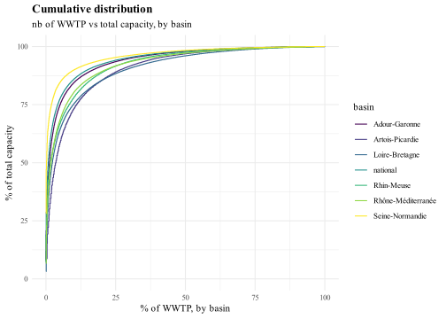
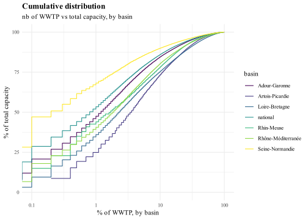

We create a file combining the different basins flows and ratios, for metropolitan France and for each basin. Since the Seine-Normandie basin data is only available for 2015, we also load the SIAAP data, containing 5 of the largest WWTP of Seine-Normandie, over a longer time period.
We do not analyse the very small WWTP (0 to 200 PE) which are very noisy and unreliable. Furthermore, they represent only a few percent of total flows.
Code
f_graph_ratio_basin_PE <-function(dataset, nutrient_ratio, ratio_label, y_min, y_max){ g <-ggplot(dataset %>%filter(PE_bin !="unreported PE")) +#basins and the modified legendgeom_line(aes(Year, !!as.symbol(nutrient_ratio), color=basin)) +guides(color =guide_legend(override.aes =list(linetype =c(1, 1, 1, 1, 1, 0),shape =c(NA, NA, NA, NA, NA, 19) ) ) ) +#SIAAP and its dotted linegeom_line(data = file_basin_PE_SIAAP, aes(Year, !!as.symbol(nutrient_ratio), linetype="SIAAP") ) +scale_linetype_manual(values=c("dotted")) +# Seine-Normandie 2015 pointgeom_point(data = dataset %>%filter(basin=="Seine-Normandie"), aes(Year, !!as.symbol(nutrient_ratio), color =factor(basin)) ) +labs(x="", y="", color="",title =paste(ratio_label, "ratio at the basins scale"),subtitle ="in the different French basins for each capacity category",caption = Source, linetype ="" ) +facet_wrap(vars(PE_bin)) +ylim(y_min, y_max)return(g)}
We do not analyse the very small WWTP (0 to 200 PE) which are very noisy and unreliable. Furthermore, they represent only a few percent of total flows.
Code
f_graph_yield_basin_PE <-function(dataset, nutrient_yield, yield_label){ g <-ggplot(dataset %>%filter(PE_bin !="unreported PE")) +#basins and adapted legendgeom_line(aes(Year, !!as.symbol(nutrient_yield), color=basin)) +guides(color =guide_legend(override.aes =list(linetype =c(1, 1, 1, 1, 1, 0),shape =c(NA, NA, NA, NA, NA, 19) ) ) ) +#SIAAP and its dotter linegeom_line(data = file_basin_PE_SIAAP, aes(Year, !!as.symbol(nutrient_yield), linetype="SIAAP") ) +scale_linetype_manual(values=c("dotted")) +#Seine-Normandie basin in 2015geom_point(data = dataset %>%filter(basin=="Seine-Normandie"), aes(Year, !!as.symbol(nutrient_yield), color = basin) ) +ylim(0, 100) +labs(x="", y="yield (%)", color="",title =paste(yield_label, "wastewater treatment plant yield at the basins scale"),subtitle ="in the different French basins",caption = Source,linetype ="" ) +facet_wrap(vars(PE_bin)) return(g)}
We do not analyse the very small WWTP (0 to 200 PE) which are very noisy and unreliable. Furthermore, they represent only a few percent of total flows.
Code
f_graph_capacity_basin_PE <-function(dataset, nutrient_ratio, ratio_label, y_min, y_max){ g <-ggplot(dataset %>%filter(PE_bin !="unreported PE")) +#basins and adapted legendgeom_line(aes(Year, !!as.symbol(nutrient_ratio), color=basin)) +guides(color =guide_legend(override.aes =list(linetype =c(1, 1, 1, 1, 1, 0),shape =c(NA, NA, NA, NA, NA, 19) ) ) ) +#seine normandie point in 2015geom_point(data = dataset %>%filter(basin=="Seine-Normandie"), aes(Year, !!as.symbol(nutrient_ratio), color =factor(basin)) ) +#SIAAP dotted linegeom_line(data = file_basin_PE_SIAAP, aes(Year, !!as.symbol(nutrient_ratio), linetype="SIAAP") ) +scale_linetype_manual(values=c("dotted")) +labs(x="", y=expression(paste("g.PE"^"-1", ".day"^"-1")), color="",title =paste(ratio_label, "per nominal PE in the different French basins"),subtitle ="in the different French basins for each capacity category",caption = Source,linetype ="" ) +facet_wrap(vars(PE_bin)) +scale_y_continuous(limits =c(y_min, y_max),sec.axis =sec_axis(trans=~.*(365/1000), name=expression(paste("kg.PE"^"-1", ".year"^"-1")) ) )return(g)}
path_source <-"output_data/zipf_law"Source <-"Source: Water Agencies\nComputation by Thomas Starck"file_zipf_law <-list.files( #read and merge csv of all yearspath = path_source,pattern ="zipf_law*", full.names = T, recursive = T ) %>%lapply(read_csv) %>% bind_rows
Nb of WWTPs vs Capacity
linear scale
Code
ggplot(file_zipf_law) +geom_step(aes(percent_rank, percent_cumulative_capacity, color = basin) ) +labs(x="% of WWTP, by basin", y="% of total capacity",title ="Cumulative distribution",subtitle ="nb of WWTP vs total capacity, by basin" ) +ylim(0, 100)

log scale
Code
ggplot(file_zipf_law) +geom_step(aes(percent_rank, percent_cumulative_capacity, color = basin) ) +scale_x_log10(labels = scales::label_number(drop0trailing =TRUE)) +scale_y_log10(labels = scales::label_number(drop0trailing =TRUE)) +labs(x="% of WWTP, by basin", y="% of total capacity",title ="Cumulative distribution",subtitle ="nb of WWTP vs total capacity, by basin" ) +ylim(0, 100)

Zipf law
Code
ggplot(file_zipf_law) +geom_point(aes(rank_STEU, capacity, color = basin) ) +geom_line(aes(rank_STEU, capacity, color = basin) ) +scale_x_log10(labels = scales::label_number(drop0trailing =TRUE)) +scale_y_log10(labels = scales::label_number(drop0trailing =TRUE)) +labs(x="rank of WWTP capacity, by basin", y="WWTP nominal capacity\n(population equivalent)",title ="Looking for a Zipf Law",subtitle ="as an indication, shaded area represent the -1 power law" ) +geom_function(fun =~ (2*10^6)*.x^-(1), linewidth=9, alpha=.4)
Save final data
We save the adjusted nutrient flows for each basin, averaged over the 2015-2020 period.